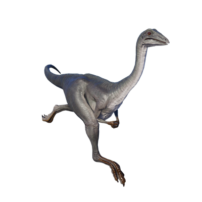

Useful Website
Archaeornithomimus is a genus of bird-like theropod, with a sharp beak and long hind legs. Its size – this dinosaur weighs between 100 and 200lbs and reaches around 3.3m in length – and physical features led to its name, which translates to ‘ancient bird mimic’. Archaeornithomimus had an omnivorous diet consisting of everything from plants to eggs and even other juvenile dinosaurs.
